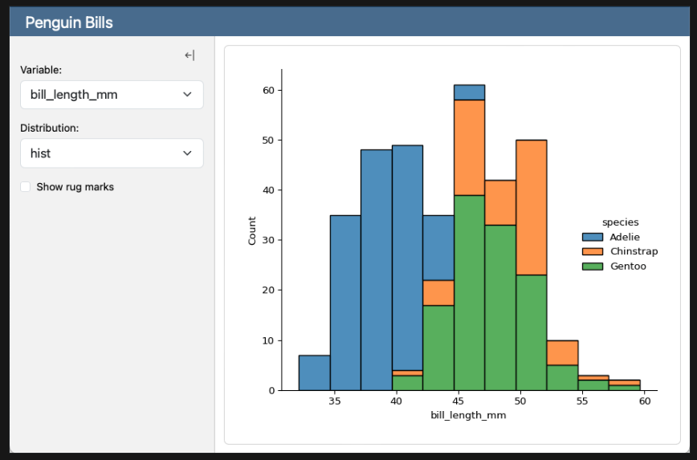

O que você vai construir: dois dashboards interativos com os dados de pinguins de Palmer. No primeiro, o usuário escolhe uma variável e o gráfico muda na hora. No segundo, há filtros, várias páginas e uma tabela de dados.
Ao final, você será capaz de:
explicar a diferença entre um dashboard estático e um interativo;
criar controles de entrada (input) e saídas dinâmicas (render);
usar @reactive.calc para reaproveitar um cálculo em vários gráficos;
executar e encerrar um dashboard Shiny no seu computador.
Pré-requisitos: Miniforge com o ambiente ds_aula (o mesmo dos tutoriais anteriores), Quarto instalado e noções de pandas e seaborn.
NotaComo usar este tutorial
Siga as seções na ordem. Cada uma termina com um ✅ Checkpoint: só avance quando o resultado descrito aparecer na sua tela. Se algo der errado, consulte a seção Problemas comuns.
2 Preparando o ambiente
2.1 Abrir o terminal e ativar o ambiente
Todos os comandos desta seção são digitados no terminal, e não dentro de uma célula de código Python.
Windows: abra o Miniforge Prompt pelo menu Iniciar;
macOS e Linux: abra o Terminal.
Em seguida, ative o ambiente da disciplina:
conda activate ds_aula
O início da linha do terminal deve passar a mostrar (ds_aula). Se aparecer (base) ou nada, o ambiente não foi ativado e os pacotes serão instalados no lugar errado.
2.2 Instalar os pacotes adicionais
O ambiente ds_aula já tem o pandas. Faltam os pacotes do Shiny e os que o Quarto usa para executar Python. Com o ambiente ativo, rode:
conda install shiny shinywidgets seaborn jupyter
Quando o conda mostrar a lista de pacotes e perguntar Proceed ([y]/n)?, digite y e pressione Enter.
shiny: biblioteca que cria a interatividade;
shinywidgets: permite usar gráficos interativos (como Plotly) dentro do Shiny;
seaborn: gráficos e conjunto de dados de exemplo (se já estiver instalado, o conda apenas confere a versão);
jupyter: usado pelo Quarto para executar código Python.
DicaPor que conda install e não pip install
No Miniforge, os pacotes vêm do canal conda-forge, onde shiny e shinywidgets estão disponíveis. Instalar tudo com o conda, num único comando, permite que ele resolva as dependências em conjunto. Misturar pip e conda no mesmo ambiente costuma causar conflitos de versão difíceis de diagnosticar. Use pip só se o conda não encontrar algum pacote.
O último comando mostra qual Python o Quarto vai usar. O caminho exibido deve conter ds_aula (por exemplo, .../miniforge3/envs/ds_aula/...).
Este tutorial foi testado com Quarto 1.11, shiny 1.9 e seaborn 0.13. Versões mais novas devem funcionar; o mínimo exigido pelo Quarto é shiny 0.9.
✅ Checkpoint: os comandos mostram números de versão, sem mensagens de erro, e o caminho do Python contém ds_aula.
2.4 Configurar o editor
Você pode trabalhar no Positron ou no VS Code. Escolha a aba do seu editor e siga os passos uma única vez. Os atalhos estão no formato do Windows e Linux; no macOS, troque Ctrl por Cmd.
Quarto já vem incluído. O Positron traz o Quarto e a extensão do Quarto; não é preciso instalar extensões.
Abra a pasta do tutorial: menu File → Open Folder… e escolha a pasta tutorial5c/. Assim, os arquivos e o terminal ficam na pasta certa.
Selecione o ambiente ds_aula: clique no seletor de interpretador, no canto superior direito da janela (mostra algo como Python 3.12), e escolha a opção que contém ds_aula. Se ela não aparecer, feche e abra o Positron de novo.
Confira o terminal: menu Terminal → New Terminal. A linha deve começar com (ds_aula). Se não começar, digite conda activate ds_aula.
Instale as extensões: abra o painel de extensões (Ctrl + Shift + X), procure e instale:
Python, da Microsoft;
Quarto, da Quarto (quarto.quarto).
Abra a pasta do tutorial: menu File → Open Folder… e escolha a pasta tutorial5c/.
Selecione o ambiente ds_aula: pressione Ctrl + Shift + P, digite Python: Select Interpreter e escolha a opção que contém ds_aula. O nome do ambiente passa a aparecer na barra inferior da janela.
Confira o terminal: menu Terminal → New Terminal. A linha deve começar com (ds_aula). Se não começar, digite conda activate ds_aula.
NotaWindows: conda não reconhecido no terminal do VS Code
O terminal padrão do VS Code no Windows é o PowerShell, que nem sempre conhece o conda. Para resolver de uma vez, abra o Miniforge Prompt, rode conda init powershell, feche tudo e abra o VS Code de novo.
ImportanteAtive o ambiente sempre
O ambiente ds_aula precisa estar selecionado no editor e ativo no terminal. Se você abrir um terminal novo e a linha não começar com (ds_aula), rode conda activate ds_aula antes de qualquer quarto preview.
Crie uma pasta só para este tutorial (por exemplo, tutorial5c/). É nela que você vai salvar os dashboards criados nas próximas seções.
3 Conhecendo os dados
Os dashboards usam o conjunto Palmer Penguins: medidas de 344 pinguins de três espécies, coletadas em três ilhas da Antártida. Vamos olhar os dados antes de construir qualquer coisa.
import seaborn as snspenguins = sns.load_dataset("penguins")penguins.head()
sns.load_dataset() baixa os dados da internet na primeira execução. Sem conexão, o comando falha.
4 Conceitos básicos
Um dashboard estático é gerado uma vez: o Quarto executa o código, cria o HTML e pronto. Um dashboard interativo (com Shiny) mantém um processo Python rodando por trás da página. Quando o usuário muda um controle, o Python recalcula só o que depende daquele controle e atualiza a tela.
Três ideias resumem o Shiny:
Conceito
O que é
Como aparece no código
Entrada (input)
controle que o usuário manipula: caixa de seleção, checkbox, slider
ui.input_select("x", ...) e, depois, input.x() para ler o valor
Saída (output)
elemento que é redesenhado: gráfico, texto, tabela
função com @render.plot, @render.text, @render.data_frame
Reatividade
o Shiny registra quais saídas leem quais entradas e as atualiza sozinho
você não chama as funções de saída; basta defini-las
Cabeçalho (YAML).format: dashboard organiza a página em painéis. server: shiny avisa o Quarto que este documento precisa de um processo Python ativo enquanto alguém o visualiza. Sem essa linha, nada seria interativo.
Primeira célula. Carrega os dados. Nada de especial aqui.
## {.sidebar}. Um título de nível 2 com a classe .sidebar cria a barra lateral. Tudo que vier abaixo dele, até o próximo título, vai para essa barra.
Os controles de entrada. Cada função ui.input_* cria um controle:
o 1º argumento é o ID ("x", "dist", "rug"). É por ele que o resto do código lê o valor. Precisa ser único e seguir as regras de nome de variável do Python;
o 2º argumento é o rótulo mostrado na tela;
choices define as opções; value define o valor inicial.
## Column. Abre a área principal, onde fica o gráfico.
A saída. O decorador @render.plot transforma a função displot() em um gráfico do dashboard. Dentro dela, input.x(), input.rug() e input.dist() leem o valor atual de cada controle. Repare nos parênteses: input.x sem () não funciona.
Note que o código nunca chama displot(). O Shiny faz isso sozinho: na abertura da página e toda vez que um dos três controles muda.
5.3 Executando o dashboard
Escolha a aba de acordo com onde você está trabalhando.
Clique no botão Preview, na barra no topo do editor, ou pressione Ctrl + Shift + K.
Aguarde. O dashboard abre no painel Viewer, ao lado do código. Para vê-lo maior, use o botão do Viewer que abre a página no navegador.
Para encerrar, vá ao painel de terminais, selecione o terminal Quarto Preview e pressione Ctrl + C (ou feche esse terminal pelo ícone da lixeira).
Abra o arquivo penguin-bills.qmd.
Clique no ícone Preview, no canto superior direito do editor, ou pressione Ctrl + Shift + K.
Aguarde. O dashboard abre num painel Quarto Preview, ao lado do código.
Para encerrar, vá ao painel de terminais, selecione o terminal Quarto Preview e pressione Ctrl + C (ou feche esse terminal pelo ícone da lixeira).
Abra o terminal (Miniforge Prompt no Windows) e ative o ambiente com conda activate ds_aula.
Vá até a pasta onde salvou o arquivo com cd, por exemplo cd Documentos/tutorial5c. Para conferir, ls (macOS/Linux) ou dir (Windows) deve listar penguin-bills.qmd.
Rode:
quarto preview penguin-bills.qmd
Aguarde. O terminal mostra mensagens de renderização e, ao final, um endereço parecido com http://localhost:XXXX. O navegador deve abrir sozinho; se não abrir, copie esse endereço.
Para encerrar, volte ao terminal e pressione Ctrl + C.
O terminal integrado do Positron e do VS Code também serve: os passos são os mesmos, e ele já abre na pasta do tutorial.
ImportanteNão feche o terminal enquanto usa o dashboard
Nos três casos, o dashboard depende de um processo Python rodando num terminal (no editor, ele se chama Quarto Preview). Se esse terminal for fechado ou interrompido, a página fica cinza e os controles param de responder.
DicaO botão Preview deu erro de módulo não encontrado?
O editor provavelmente está usando outro Python. Confira se ds_aula está selecionado (seção Configurar o editor). Se o erro continuar, use a aba Terminal: rodar quarto preview num terminal com (ds_aula) ativo sempre usa o ambiente certo.
✅ Checkpoint: o navegador mostra uma barra lateral com dois menus e uma caixa de seleção, e um histograma empilhado por espécie à direita. Troque a variável para bill_depth_mm e a distribuição para kde: o gráfico deve mudar em um ou dois segundos.

Resultado esperado do dashboard Penguin Bills.
6 Hello Shiny 2: um dashboard mais completo
Agora vamos acrescentar filtros, páginas e uma tabela. O dashboard final terá:
barra lateral com filtros de espécie e ilha, tipo de distribuição e marcas rug;
página Gráficos, com as distribuições da profundidade e do comprimento do bico;
página Dados, com a tabela filtrada.
6.1 O código
Copie o bloco abaixo para um arquivo novo chamado palmer-penguins.qmd, como no exemplo anterior:
Execute da mesma forma: botão Preview (ou Ctrl + Shift + K) no Positron ou no VS Code, ou quarto preview palmer-penguins.qmd no terminal. Se o Penguin Bills ainda estiver rodando, encerre-o antes.
6.2 O que mudou em relação ao primeiro dashboard
author: no cabeçalho. O texto aparece ao lado do título, na barra superior.
#| context: setup. Em documentos com server: shiny, as células comuns rodam de novo para cada pessoa que abre a página. A célula marcada com context: setup roda uma única vez, quando o servidor inicia. Por isso, importações e leitura de dados ficam nela: não faz sentido baixar a mesma tabela a cada visita.
# {.sidebar} com título de nível 1. No primeiro exemplo a barra lateral usava ##. Aqui ela usa #, o que a torna global: ela aparece em todas as páginas.
Imagem na barra lateral. A barra aceita Markdown comum, não só código. {width="80%"} insere a ilustração com 80% da largura da barra. O caminho é relativo ao arquivo .qmd; se a imagem não estiver na mesma pasta, aparece um ícone de imagem quebrada. A ilustração é de Allison Horst e tem licença livre (CC0).
Opções geradas a partir dos dados. As listas species e islands são criadas com value_counts().index. Se os dados mudarem, as caixas de seleção acompanham sem você editar o código. selected= faz todas começarem marcadas.
@reactive.calc. Os três elementos de saída (dois gráficos e a tabela) usam os mesmos dados filtrados. Em vez de repetir o filtro três vezes, ele fica em uma só função decorada com @reactive.calc. Ela funciona assim:
é recalculada apenas quando input.species() ou input.islands() mudam;
guarda o resultado; quem chama filtered_penguins() recebe o valor já pronto;
deve ser chamada com parênteses, como uma função.
req(...). Se o usuário desmarcar todas as espécies, input.species() fica vazio e o gráfico mostraria um erro. req() interrompe o cálculo em silêncio quando algum valor está vazio, e as saídas simplesmente ficam em branco.
Páginas com # Gráficos e # Dados. Cada título de nível 1 vira uma aba na barra superior.
@render.data_frame. Mostra uma tabela interativa (ordenável). render.DataGrid dá aparência de planilha; render.DataTable dá aparência de tabela tradicional.
6.3 Como a reatividade flui
O diagrama mostra quem depende de quem. Quando um controle muda, o Shiny segue as setas e recalcula só o necessário.
flowchart LR
S[input.species] --> F["filtered_penguins()<br/>@reactive.calc"]
I[input.islands] --> F
F --> D[depth<br/>gráfico]
F --> L[length<br/>gráfico]
F --> T[dataview<br/>tabela]
K[input.dist] --> D
K --> L
R[input.rug] --> D
R --> L
Mudar dist ou rug, por exemplo, redesenha os dois gráficos, mas não refaz o filtro nem a tabela.
✅ Checkpoint:
Desmarque a espécie Gentoo: as curvas verdes somem dos dois gráficos.
Vá para a aba Dados: a tabela não tem mais linhas de Gentoo.
Desmarque todas as espécies: os gráficos ficam vazios, sem mensagem de erro.
7 Problemas comuns
Sintoma
Causa provável
Solução
SyntaxError ao rodar conda install ...
comando digitado numa célula Python
rode no terminal (Miniforge Prompt no Windows)
conda: command not found ou comando não reconhecido
terminal comum, sem o conda carregado
no Windows, use o Miniforge Prompt; no macOS/Linux, rode conda init uma vez e reabra o terminal
EnvironmentNameNotFound: ds_aula
ambiente com outro nome ou não criado
liste os ambientes com conda env list
ModuleNotFoundError: No module named 'shiny'
ambiente ds_aula não ativado, ou pacotes instalados em outro ambiente
conda activate ds_aula e rode conda install shiny shinywidgets de novo; no IDE, selecione o interpretador ds_aula
quarto check jupyter mostra um Python fora de ds_aula
Quarto rodando com outro Python
ative o ambiente no mesmo terminal em que roda o quarto; se persistir, defina a variável QUARTO_PYTHON com o caminho do Python do ds_aula
quarto: command not found
Quarto não instalado ou fora do PATH
instale pelo site do Quarto e reabra o terminal; no Positron, o Quarto embutido funciona pelo botão Preview mesmo sem esse comando
VS Code sem botão Preview em arquivos .qmd
extensão Quarto não instalada
instale a extensão Quarto (quarto.quarto)
Positron ou VS Code não lista o ds_aula
editor aberto antes de o ambiente existir
feche e abra o editor; no VS Code, tente Python: Select Interpreter de novo
ModuleNotFoundError ao clicar em Preview
editor usando outro Python
selecione o ds_aula ou rode quarto preview no terminal com o ambiente ativo
File not found no quarto preview
terminal aberto em outra pasta
navegue com cd até a pasta do arquivo
Página abre, mas fica cinza ou não responde
servidor interrompido (terminal Quarto Preview fechado ou Ctrl + C)
rode quarto preview de novo
Página estática, controles sem efeito
falta server: shiny no cabeçalho
inclua a linha e rode de novo
NameError: name 'input' is not defined
arquivo executado como script Python comum, fora do Quarto
rode com quarto preview arquivo.qmd
Erro de conexão em load_dataset
sem internet
conecte-se ou carregue um CSV local com pd.read_csv()
Ícone de imagem quebrada na barra lateral
penguins.png fora da pasta do .qmd
salve a imagem junto do arquivo
Gráfico com erro ao desmarcar todos os filtros
dados filtrados vazios
use req() no @reactive.calc
NotaSobre o arquivo app.py
Ao renderizar um documento com server: shiny, o Quarto gera um arquivo app.py na mesma pasta. Não edite esse arquivo: ele é recriado a cada renderização. Se houver vários dashboards Shiny na mesma pasta, cada renderização sobrescreve o app.py do anterior. Para o quarto preview isso não é problema, mas, para publicar, mantenha cada dashboard em sua própria pasta.